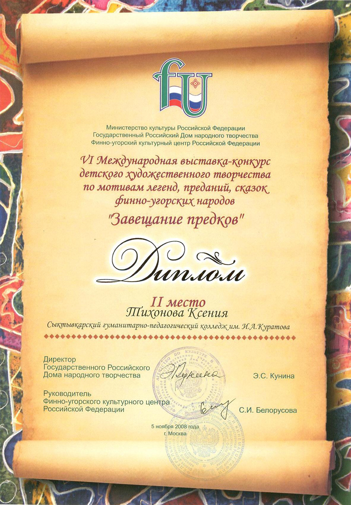

2008.12.19 - ГПОУ "СГПК" - https://sgpk.rkomi.ru
2008.12.19Поздравляем
студентку 531 группы художественно-графического отделения
Тихонову Ксению
и её научного руководителя
Лысенкову Екатерину Леонидовну!
Ксения заняла второе место в VI Международной выставке-конкурсе детского художественного творчества по мотивам легенд, преданий, сказок финно-угорских народов "Завещание предков".
Мы рады за вас!
